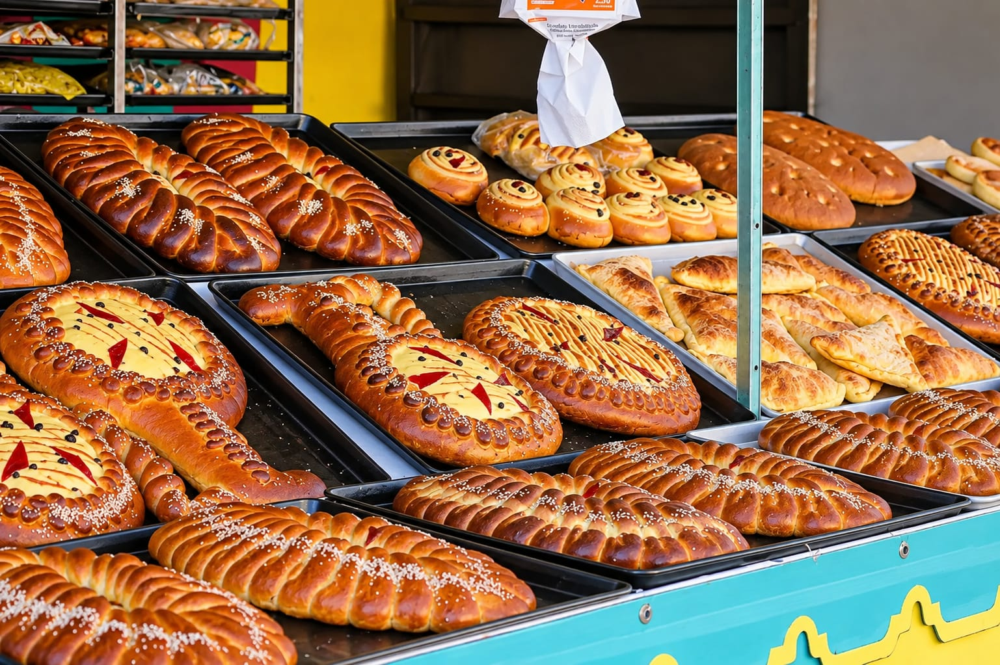
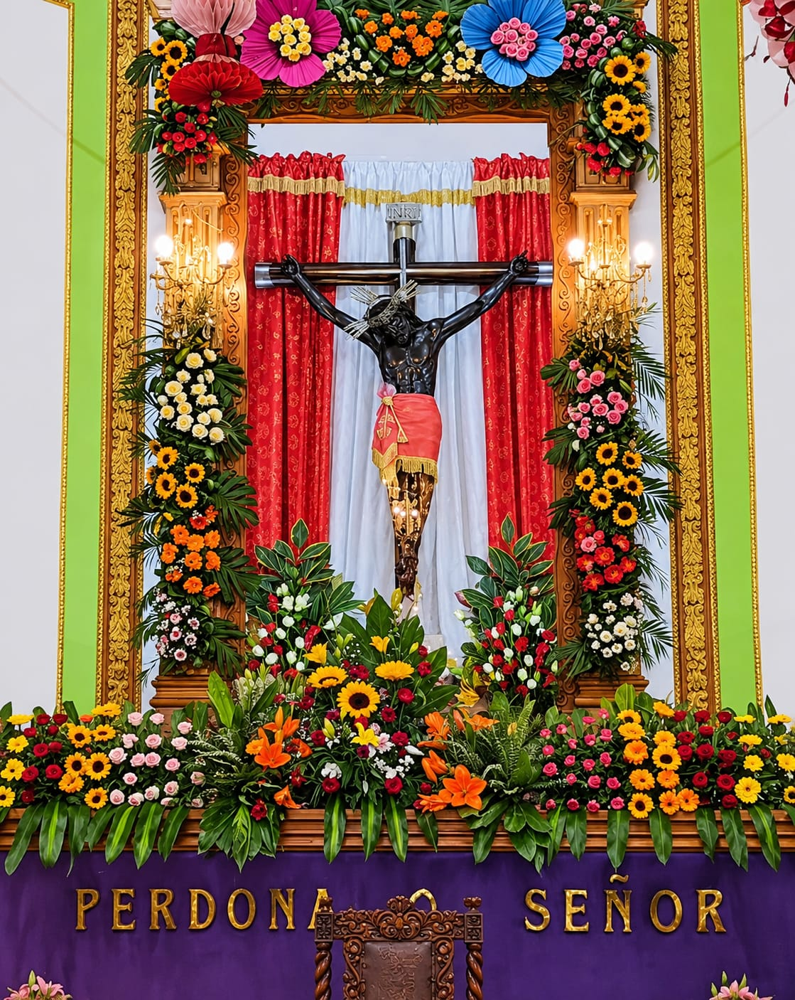
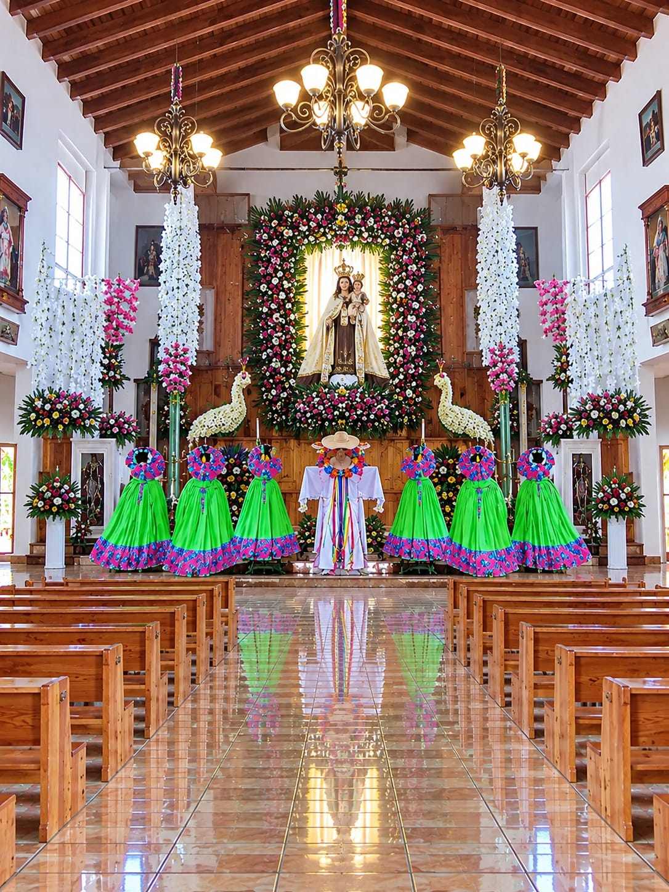
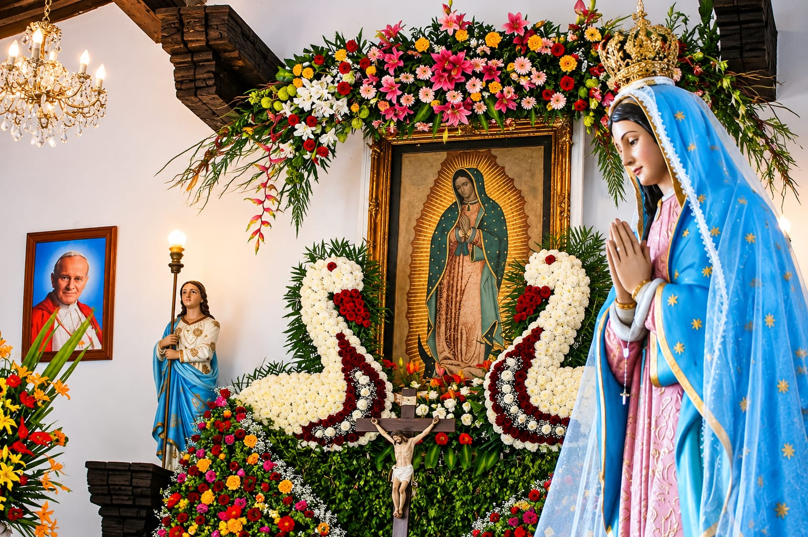

El 3 de mayo se celebra el Día de la Santa Cruz, una tradición religiosa muy arraigada en Valle de Bravo, especialmente en el barrio de Santa María Ahuacatlán. Durante esta fecha, los habitantes participan en actividades religiosas para conmemorar la cruz como símbolo de fe y devoción.
Entre las costumbres destacan la bendición de cruces, las peregrinaciones y las celebraciones litúrgicas. Las calles y los espacios cercanos al templo se llenan de visitantes que acuden a participar en esta festividad. Esta celebración conserva una importante expresión de la identidad religiosa y cultural de los habitantes de Valle de Bravo.Al recorrer estos establecimientos es posible descubrir diferentes estilos de decoración, objetos tradicionales, accesorios y productos elaborados por manos artesanas. Sus espacios están llenos de colores, diseños y detalles que llaman la atención de los visitantes. Además, representan una oportunidad para conocer el trabajo de los comerciantes locales y adquirir recuerdos especiales de la región.

Las tiendas exhiben hermosas piezas de cerámica, macetas, figuras decorativas y vajillas de distintos diseños. Son ideales para encontrar detalles especiales y llevarse un recuerdo del Una de las celebraciones religiosas más representativas de Valle de Bravo es la fiesta del Señor de Santa María, conocido popularmente como el Cristo Negro. La festividad comienza desde el 1 de mayo y tiene su día principal el 3 de mayo, coincidiendo con el Día de la Santa Cruz. Durante estos días llegan numerosos visitantes de distintas comunidades y regiones para venerar la imagen.
El Cristo Negro representa una de las expresiones más importantes de la fe, la historia y la identidad cultural de Valle de Bravo, convirtiendo esta celebración en un atractivo de turismo religioso.

En la comunidad de Casas Viejas, perteneciente al municipio de Valle de Bravo, cada 16 de julio se celebra la fiesta en honor a la Virgen del Carmen, una de las advocaciones marianas reconocidas por la tradición católica. Esta festividad representa una ocasión especial para que los habitantes se reúnan y manifiesten su devoción mediante celebraciones religiosas y actividades comunitarias. La fecha forma parte del calendario de festividades religiosas de la localidad. Es una oportunidad para conocer la vida comunitaria, las costumbres y la identidad cultural de Casas Viejas.
La celebración también permite apreciar la importancia que tienen las tradiciones religiosas en las comunidades rurales de Valle de Bravo.

Cada 12 de diciembre, Valle de Bravo celebra con gran devoción a la Virgen de Guadalupe. Los festejos se realizan principalmente en la Capilla de Nuestra Señora de Guadalupe, donde habitantes y peregrinos se reúnen para expresar su fe y conservar esta importante tradición mexicana.
La celebración comienza con un novenario, acompañado de rosarios y peregrinaciones durante los días previos. El día principal se realizan mañanitas, misas y encuentros religiosos, además de una verbena popular con música, convivencia y fuegos artificiales. Esta festividad representa una oportunidad para conocer las costumbres religiosas y la hospitalidad de la comunidad vallesana.